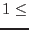

| Parameter | Mand | Type | Default | Constraints |
| inset | yes | dataset | dummy_default | |
The input image dataset.
|
| outset | no | dataset | rebinned_image.ds | |
The output (rebinned) image dataset.
|
| newvaluestyle | no | string | sum | sum|average|rms |
This specifies the way in which the values of the output image are calculated. See section 2.2.
|
| binxsize | no | integer | 5 | binxsize |
The number of columns of the input image to fit into 1 column of the output image.
|
| binysize | no | integer | 5 | binysize |
The number of rows of the input image to fit into 1 row of the output image.
|
| offsetx | no | integer | |  offsetx offsetx |
The number  of the first column of the input image to go into the first column of the output image is given by offsetx. of the first column of the input image to go into the first column of the output image is given by offsetx.
|
| offsety | no | integer | | offsety |
The number  of the first row of the input image to go into the first row of the output image is given by offsety. of the first row of the input image to go into the first row of the output image is given by offsety.
|
| Parameter | Mand | Type | Default | Constraints |